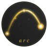

Life Journey
시작점에서 정점까지.
삶의 궤적을 그리는 여정.
Growth Journey
"가르치는 것이 아니라,
함께 성장하는 것이다."
부모는 선생이 아닌 동반자. 아이의 속도에 맞춰 걷고, 아이가 넘어지면 일어설 때까지 기다린다. 20년의 육아 경험이 만든, 현실적인 교육 철학.
Programs
첫 걸음부터 첫 말까지
Baby스스로 공부하는 아이
Child적성과 꿈을 찾는 여정
Student의대/법대/전문대학원
DoctorOur Values
아이마다 다른 속도. 비교하지 않고, 재촉하지 않는다.
책상 앞보다 세상 속에서. 직접 부딪히며 배운다.
넘어져야 일어서는 법을 안다. 실패는 수업료다.
"아이의 시간은 아이의 것이다"